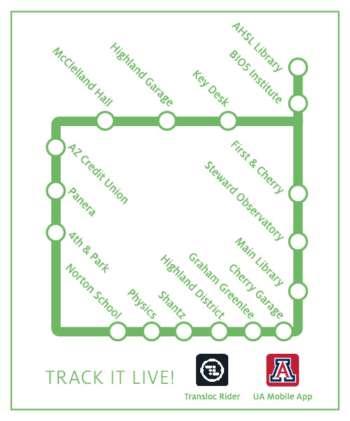
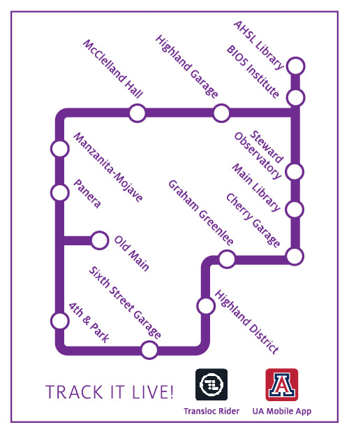
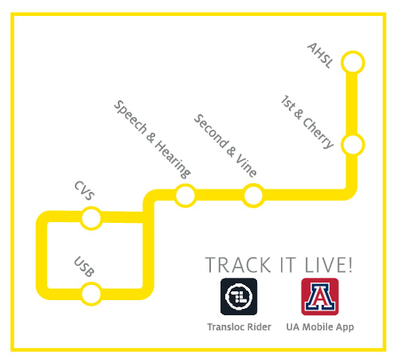

The easiest (and cheapest) way to get to the College of Medicine from the main campus, or vice-versa, is via CatTran. The green, yellow, and purple routes all take you to the College of Medicine. Simply look at the maps below and pick the route closest to your location. You will want to get off at either the AHSL library (preferable) or the BIO5 Institute.
Shuttles arrive at each spot typically every 15 minutes. Shuttles are free for students with a CatCard.



You can also track the CatTran shuttle live at any moment either through your device's built in web browser or the official UA Mobile App for iPhone and Android.